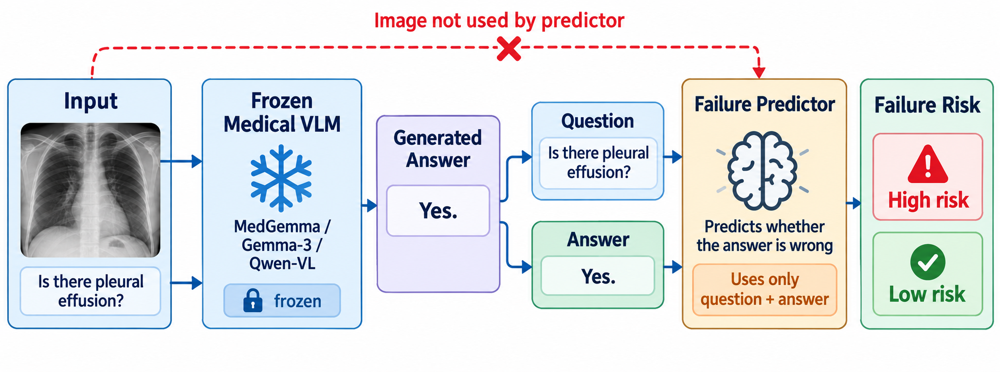
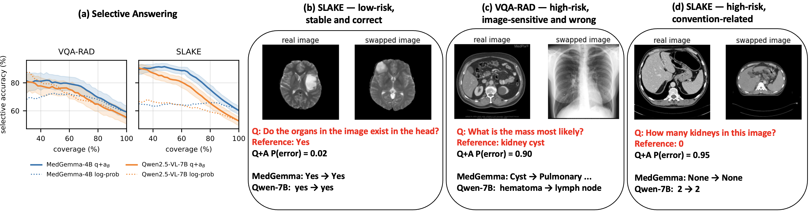

1Université Sorbonne Paris Nord · 2F-Initiatives · 3University of Illinois Chicago · 4University of Dubai
Submitted to ICASSP 2027

Vision–language models (VLMs) can produce plausible but incorrect answers on medical visual question answering even under ordinary, intact inputs. We study whether the failure of an already generated answer can be predicted before any test-time intervention. Across five frozen VLMs on VQA-RAD and SLAKE, a predictor using only the question and generated answer reaches AUROC 0.77–0.94, while frozen image features provide little additional failure-predictive information and standard confidence signals are generally weaker. Failures also exhibit strong cross-model structure: approximately one quarter of test items are answered incorrectly by all five VLMs, far above the rate expected under independent errors. Counterfactual image replacement and degradation confirm that the models do use visual information, showing that failure predictability is not simply image blindness. Although per-item oracle correction reveals substantial headroom, inexpensive test-time interventions do not recover it reliably; in contrast, the same risk score supports effective selective answering. Our results reveal shared item- and question–answer structure in VLM failures on medical VQA and distinguish visual dependence, failure detectability, and correctability.
AUROC of a logistic regression on frozen BiomedCLIP embeddings of the question and the generated answer, for five frozen VLMs on VQA-RAD (0.77–0.79) and SLAKE (0.88–0.94). Image embeddings alone: 0.49–0.58, and they add nothing to Q+A.
26.8 % of VQA-RAD and 25.7 % of SLAKE test items are failed by all five VLMs, against 3.4 % / 3.2 % expected under independent errors. A predictor trained on one VLM transfers to another at AUROC 0.71–0.83.
Removing, swapping or degrading the image sharply reduces the score, yet image-insensitive answers are the more accurate ones and high-risk answers are more image-sensitive. Predictable failure is not image blindness.
Cheap test-time corrections (re-prompting, enhancement, zoom, gating, consensus, self-verification) leave a 4.5–10.4-point oracle headroom unrecovered, whereas keeping the 50 % lowest-risk answers raises exact accuracy from 59/55/60/53 % to 81/76/91/84 %.
| Benchmark | VLM | Acc. | Img. | Log-p | Samp. | Pert. | Q+A | Probe | Sel.@50 |
|---|---|---|---|---|---|---|---|---|---|
| VQA-RAD | MedGemma-4B | 59.2 | .49 | .67 | .62 | .71 | .79 | .85 | 81 |
| VQA-RAD | Gemma-3-4B | 35.9 | .52 | .52 | .56 | .64 | .77 | .85 | 57 |
| VQA-RAD | Qwen2.5-VL-7B | 55.2 | .49 | .80 | .76 | .73 | .78 | .82 | 76 |
| VQA-RAD | Qwen2.5-VL-3B | 49.2 | .56 | .65 | .74 | .70 | .78 | .81 | 69 |
| VQA-RAD | Qwen2-VL-2B | 42.4 | .54 | .71 | .72 | .64 | .78 | .83 | 63 |
| SLAKE | MedGemma-4B | 60.2 | .58 | .59 | .58 | .67 | .91 | .96 | 91 |
| SLAKE | Gemma-3-4B | 32.0 | .58 | .49 | .56 | .66 | .94 | .94 | 63 |
| SLAKE | Qwen2.5-VL-7B | 52.8 | .57 | .68 | .77 | .73 | .90 | .95 | 84 |
| SLAKE | Qwen2.5-VL-3B | 55.1 | .56 | .78 | .78 | .70 | .88 | .93 | 84 |
| SLAKE | Qwen2-VL-2B | 43.5 | .53 | .75 | .73 | .67 | .91 | .93 | 77 |
Acc. and Sel.@50 are exact-answer accuracy (%) on the official test split; the other columns are AUROC for predicting an incorrect answer (train+validation → test). Img. = frozen BiomedCLIP image embedding; Log-p = token log-probability; Samp. = sampling self-consistency; Pert. = agreement under re-prompting, enhancement and zoom; Q+A = question + generated answer embeddings; Probe = linear probe on the VLM's last hidden state.

| Setting | Base | Best fixed | Gate | Oracle | Sel.@50 | |
|---|---|---|---|---|---|---|
| VQA-RAD | MedGemma-4B | 64.3 | 62.9 | 63.1 | 70.4 | 81 |
| VQA-RAD | Qwen2.5-VL-7B | 58.8 | 60.5 | 58.8 | 68.2 | 76 |
| SLAKE | MedGemma-4B | 65.1 | 66.3 | 67.4 | 70.8 | 91 |
| SLAKE | Qwen2.5-VL-7B | 56.4 | 59.2 | 62.8 | 69.6 | 84 |
Base, best fixed intervention, learned gate + action policy and per-item oracle are Metric-A scores; Sel.@50 is exact accuracy on the 50 % lowest-risk answers ranked by Q+A. Knowing that an answer is risky is easier than knowing how to replace it.
Everything in the paper regenerates from the repository: the split files, prompts, the 22-rule canonicalisation, the pre-registered hypotheses, every result CSV, and all model generations (attached to the release so that the analyses run without a GPU).
git clone https://github.com/mtliba/VLM-ImFreeRisk.git && cd VLM-ImFreeRisk
pip install -r requirements.txt
python scripts/download_data.py # VQA-RAD + SLAKE
# unpack generations.tar.gz from the release into results/, then:
python scripts/error_predictability.py # Table 1
python scripts/stageA_analysis.py # Table 2
python scripts/selective_qaB_test.py # Sel.@50 and the risk-coverage figure@inproceedings{tliba2027vlmfail,
title = {When will a {VLM} fail on medical {VQA}? Image-free risk prediction and shared error structure},
author = {Tliba, Marouane and Kerkouri, Mohamed Amine and Taifour, Youssra and Benyahyia, Mohamed Oussama and
Hamdan, Emadeldeen and Halimi Milani, Omid and Selam, Zakaria and Abouread, Nour and
Chetouani, Aladine and Cetin, Ahmet Enis and Beghdadi, Azeddine},
booktitle = {IEEE International Conference on Acoustics, Speech and Signal Processing (ICASSP)},
year = {2027},
note = {under review}
}